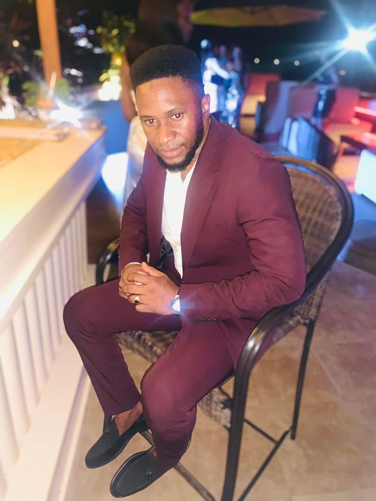
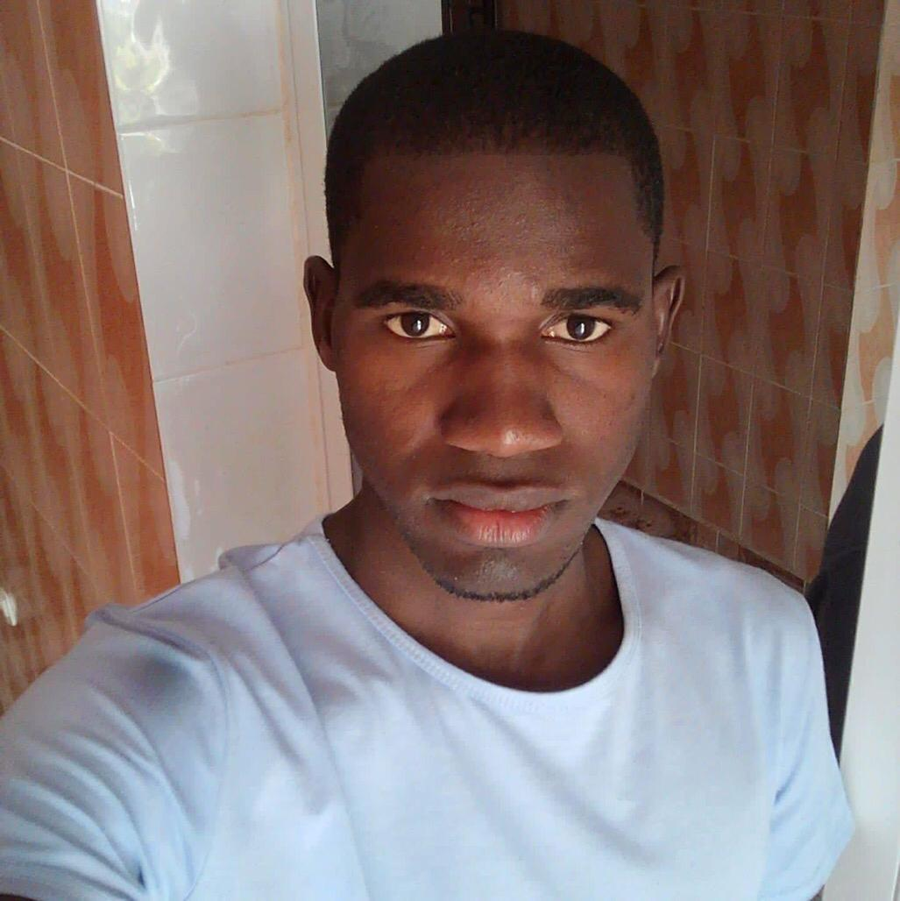
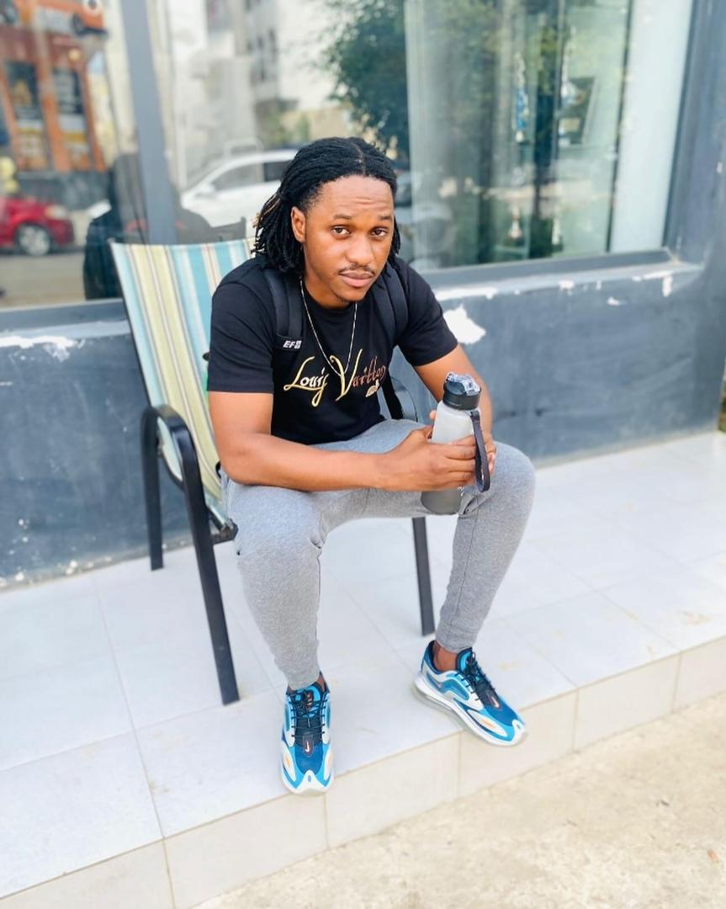

Alex Balde

Alex Balde foi beneficiada pelo programa de formação profissional da nossa fundação. Depois de perder o emprego, Alex encontrou apoio em nossa organização e conseguiu se capacitar para o mercado de trabalho. Hoje, ele trabalha como gerente de vendas e é um exemplo de superação e sucesso.
Sidia Malam

Sidia Malam enfrentou muitos desafios em sua vida. Com a ajuda do nosso programa de reinserção social, ele conseguiu se reerguer e hoje trabalha como voluntário, ajudando outras pessoas a superar dificuldades. Sua história é um exemplo do poder da solidariedade e do trabalho comunitário.
Apite Boss

Apite Boss foi beneficiada pelo programa de apoio psicológico da fundação. Após passar por um período de depressão, ela encontrou a ajuda de que precisava para reconstruir sua vida. Hoje, Apite é um forte defensor da saúde mental e inspira outras pessoas a buscarem ajuda.